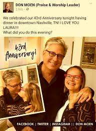

The American singer, pianist and a christain's song writer porpularly known as Don Moen
full name is Donald James Moen. He was born on 29 June 1950 in Minneapolis, Minnesota, the United State of America.
Moen graduated from high school in 1968. Then he attended the University of Oklahoma, earning a degree in music in 1972.
He then studied at Oral Roberts University and traveled with Terry Law Ministries as a Living Sound musician for 10 years.
Moen has been married to Laura Lee Szuchna.The couple tied the knot in 1973 and
together their blessed with five grown-up children. Don and his wife, Laura
lives in Nashville, Tennessee.

Since the year 1973, Moen has been hitched to his better half, Laura Moen.
Their marriage has flourished for long and withstood embarrassments, it has
similarly filled in as an embodiment of what a perfect Christian home ought to resemble when separation cases are extremely pervasive.
Don and his wife have five children namely, Melissa Moen, James Moen, John Moen, Rachel Moen, and Micheal Moen who are all grown-ups.